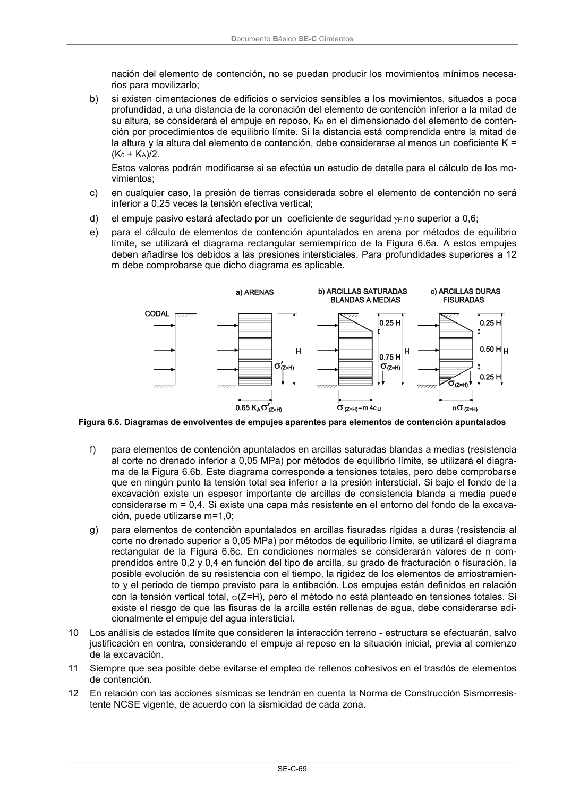

DB-SE-C Cimientos · edición 2019-12-20 · capa oficial
Documento DB-SE-C-oficial · SHA-256 del PDF a71133f4b0dca253e45ea3071c70f2a512354bcc5cd841bf89b1a502f567ac5e
Página física 74 de 165.
Copia fiel del PDF fuente · Fuente oficial
Ficha de la disposición en la fuente oficial
Formato: Texto de la página (Markdown)
Documento Básico SE-C Cimientos SE-C-69 nación del elemento de contención, no se puedan producir los movimientos mínimos necesa- rios para movilizarlo; b) si existen cimentaciones de edificios o servicios sensibles a los movimientos, situados a poca profundidad, a una distancia de la coronación del elemento de contención inferior a la mitad de su altura, se considerará el empuje en reposo, K0 en el dimensionado del elemento de conten- ción por procedimientos de equilibrio límite. Si la distancia está comprendida entre la mitad de la altura y la altura del elemento de contención, debe considerarse al menos un coeficiente K = (K0 + KA)/2. Estos valores podrán modificarse si se efectúa un estudio de detalle para el cálculo de los mo- vimientos; c) en cualquier caso, la presión de tierras considerada sobre el elemento de contención no será inferior a 0,25 veces la tensión efectiva vertical; d) el empuje pasivo estará afectado por un coeficiente de seguridad E no superior a 0,6; e) para el cálculo de elementos de contención apuntalados en arena por métodos de equilibrio límite, se utilizará el diagrama rectangular semiempírico de la Figura 6.6a. A estos empujes deben añadirse los debidos a las presiones intersticiales. Para profundidades superiores a 12 m debe comprobarse que dicho diagrama es aplicable. Figura 6.6. Diagramas de envolventes de empujes aparentes para elementos de contención apuntalados f) para elementos de contención apuntalados en arcillas saturadas blandas a medias (resistencia al corte no drenado inferior a 0,05 MPa) por métodos de equilibrio límite, se utilizará el diagra- ma de la Figura 6.6b. Este diagrama corresponde a tensiones totales, pero debe comprobarse que en ningún punto la tensión total sea inferior a la presión intersticial. Si bajo el fondo de la excavación existe un espesor importante de arcillas de consistencia blanda a media puede considerarse m = 0,4. Si existe una capa más resistente en el entorno del fondo de la excava- ción, puede utilizarse m=1,0; g) para elementos de contención apuntalados en arcillas fisuradas rígidas a duras (resistencia al corte no drenado superior a 0,05 MPa) por métodos de equilibrio límite, se utilizará el diagrama rectangular de la Figura 6.6c. En condiciones normales se considerarán valores de n com- prendidos entre 0,2 y 0,4 en función del tipo de arcilla, su grado de fracturación o fisuración, la posible evolución de su resistencia con el tiempo, la rigidez de los elementos de arriostramien- to y el periodo de tiempo previsto para la entibación. Los empujes están definidos en relación con la tensión vertical total, (Z=H), pero el método no está planteado en tensiones totales. Si existe el riesgo de que las fisuras de la arcilla estén rellenas de agua, debe considerarse adi- cionalmente el empuje del agua intersticial. 10 Los análisis de estados límite que consideren la interacción terreno - estructura se efectuarán, salvo justificación en contra, considerando el empuje al reposo en la situación inicial, previa al comienzo de la excavación. 11 Siempre que sea posible debe evitarse el empleo de rellenos cohesivos en el trasdós de elementos de contención. 12 En relación con las acciones sísmicas se tendrán en cuenta la Norma de Construcción Sismorresis- tente NCSE vigente, de acuerdo con la sismicidad de cada zona.
